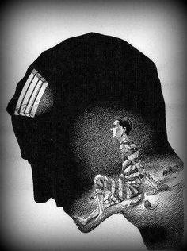

Loren LaValley
Trapped In My Mind
Kid Cudi
You see, I'm trapped in my mind, oh, I'm going trippy
Oh, I don't think I'll ever go
You see the walls are so high that I couldn't climb them
So I don't know which way to roll
Well, I'm stuck in rewind though I'm looking forward
Damn, I wish I knew what went wrong
I'm sick and I'm ill, my mental got me
Oh Lord, please help me pull through

You see the sun seems to shine when I am not looking
Oh, it seems a trick every time
Things do get out of hand once a while inside my mental
Hey, I took a hell of a run
When I see what a soul I know I am not lucky
Yeah, I like to pat my own back
It's a gift and a curse since my birth, I'm in a prison
Oh, I'm happy right where I'm at